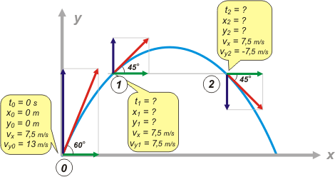
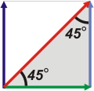

|
NO ME SALEN
PROBLEMAS RESUELTOS DE FÍSICA
(Tiro oblicuo)
|
|

|
| Adicional No me salen 24* - Un jugador de fútbol patea la pelota con una velocidad de 15 m/s y un ángulo de lanzamiento de 60°. Halla los instantes en que el vector velocidad forma angulos de 45° y -45° con la horizontal. Escribe las coordenadas de las posiciones de la pelota en esos instantes. |
|
Un ejercicio bonito, bonito de tiro oblicuo. Ya te dije mil veces que si nos ofrecen como dato el módulo de la velocidad inicial y el ángulo que forma con la horizontal, α, también hay que considerar datos a las componentes (horizonyal y vertical) de la velocidad. En nuestro caso:
vx = vo cos α = 15 m/s . cos 60° = 7,5 m/s
voy = vo sen α = 15 m/s . sen 60° = 13 m/s
Ahora sí, hagamos el esquema: |
|
|
 |
|
|
Si mirás atentamente el esquema ya te das cuenta cómo resolví el ejercicio (el resto será sólo una formalidad). Llamé 0 al instante inicial; 1 y 2 los instantes en que la pelota forma ángulos de 45° con la horizontal.
Las velocidades reales de la pelota las representé en rojo. Las componentes horizontales de las velocidades las representé en verde (y habrás observado que tienen siempre la misma longitud ya que el desplazamiento horizontal es uniforme). Y las componentes verticales las representé en azul. Acá viene la cuestión: cuando una velocidad real forma 45° con la horizontal (no importa si hacia abajo o hacia arriba) las componentes horizontal y vertical son iguales entre sí. Conociendo esa trampa fue que llené los globitos del esquema.
Aunque si no te hubieras dado cuenta del asunto de las velocidades verticales, al llenar los globos tendrías que haber puesto cosas como éstas (antes o después, hacés el cálculo y salen los valores de las velocidades verticales).
|
|
|
| |
vx1 = vx = v1 . cos 45° = 7,5 m/s
vy1 = v1 . sen 45° = 7,5 m/s
vx2 = vx = v2 . cos -45° = 7,5 m/s
vy2 = v2 . sen -45° = -7,5 m/s |
 |
|
|
tené en
cuenta que
cos 45° =
= sen 45°
mirá el triangulito |
Vamos a la pura formalidad. Partamos de los modelos de ecuaciones horarias del TO.
x = xo + vx ( t – to )
y = yo + voy ( t – to ) + ½ g ( t – to )²
vy = voy + g ( t – to )
Nuestras constantes son las del globito de la izquierda. Las ecuaciones quedan así:
x = 7,5 m/s . t
y = 13 m/s . t – 5 m/s² . t²
vy = 13 m/s – 10 m/s² . t
estas son las ecuaciones que describe todo el movimiento de la pelota. Vamos a pedirles que hablen de los puntos 1 y 2. |
|
|
| |
x1 = 7,5 m/s . t1
y1 = 13 m/s . t1 – 5 m/s² . t1²
7,5 m/s = 13 m/s – 10 m/s² . t1 |
[1]
[2]
[3] |
| |
x2 = 7,5 m/s . t2
y2 = 13 m/s . t2 – 5 m/s² . t2²
–7,5 m/s = 13 m/s – 10 m/s² . t2 |
[4]
[5]
[6] |
|
|
|
Te imaginarás que desembocamos en un sistema de ecuaciones con incógnitas en las que hay igual número de ecuaciones que de incógnitas... te imaginás bien.
De la [3] sale t1 y de la [6] sale t2.
t1 = (7,5 m/s – 13 m/s) / –10 m/s² = 0,55 s
t2 = ( – 7,5 m/s – 13 m/s) / –10 m/s² = 2,05 s
Con esos valores nos vamos a las otras cuatro ecuaciones y obtenemos las coordenadas de las posiciones 1 y 2. |
|
|
| |
t1 = 0,55 s x1 = 4,13 m y1 = 5,64 m
t2 = 2,05 s x2 = 15,38 m y2 = 5,64 m |
|
|
|
|
Por supuesto... (ya lo había previsto cuando hice el esquema) las alturas de ambas posiciones son idénticas. Se trata de una de las propiedades de la simetría de las trayectorias del tiro oblicuo (las parábolas): a iguales inclinaciones de la curva (de la velocidad), iguales alturas. |
|
|
| *Este ejercicio fue parte del primer examen parcial de Física tomado el primer catrimestre de 2004 en la sede de San Isidro del CBC. Gulp. |
|
|
|
DESAFIO: Sin plantear ecuaciones (apelando a criterios de simetría) ¿En qué instante se alcanza el punto más alto? ¿En qué instante la pelota regresa al piso? |
|
 |
| Algunos derechos reservados.
Se permite su reproducción citando la fuente. Última actualización jun-09. Buenos Aires, Argentina. |
|
|
| |
|